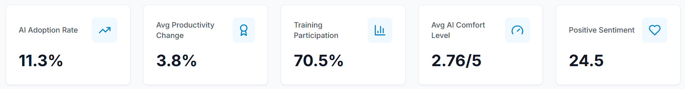
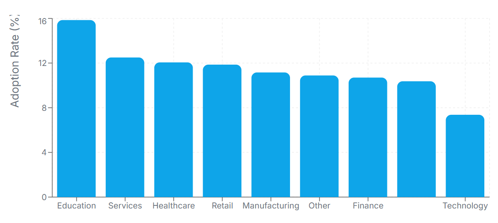
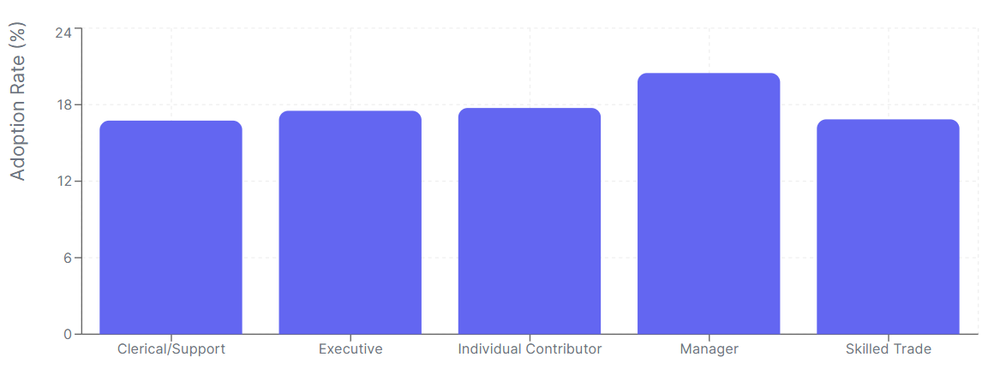
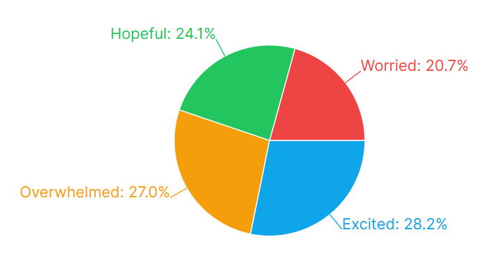
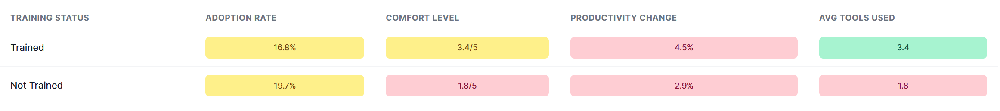

Interactive Analytics
Dashboard Insights
Powerful visualizations driving data-informed decisions

Real-Time KPI Cards
5 key metrics: AI Adoption Rate (11.3%), Productivity Change (3.8%), Training Participation (70.5%), Comfort Level (2.76/5), and Positive Sentiment (24.5%).
Live Data
PostgreSQL
Real Metrics

Adoption by Company Size
Comparative analysis showing how AI adoption varies across enterprises, mid-size, and startups.
Benchmarking
Size Analysis
Bar Charts

Role-Based Adoption
Breakdown of AI tool usage patterns across different job functions and departments.
Role Analysis
Department View
Comparison

Sentiment Distribution
Visual breakdown of employee attitudes: enthusiastic, neutral, concerned, and resistant.
Pie Chart
Attitude Analysis
Trend Watch

Productivity by Industry
Industry-specific productivity gains from AI adoption with sector benchmarking data.
Industry Data
ROI Metrics
Benchmarks

ROI Heatmap
Visual correlation matrix showing the relationship between AI investment and business outcomes.
Heatmap
Correlation
Executive View